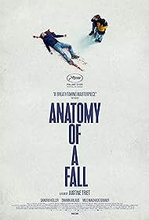

|  | |||||
| Justine Triet's “Anatomy of a Fall” starts with a traditional mystery but becomes an analysis of a different kind of fall than the literal one at its center. It's about the decline of a partnership and how often these marital falls can happen in slow-motion, over years of resentments and betrayals. | |||||
| Crime Drama Thriller | |||||
|
|||||
|
|||||
My commentsThere are so many things I got from this after watching it. So many subtle little thing that throw shade over both characters, thus showing such complex humans with flaws and virtues. This movie runs 150 minutes, but I was never bored or distracted. The script is taught, the direction intriguing. Certain scenes, like when the boy is being questioned by two opposing lawyers at the same time, so that he is constantly turning his head back and forth to look at each in turn, are very clever. |
|||||